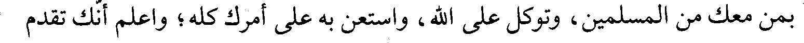
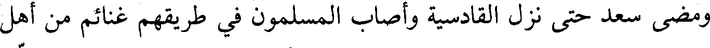
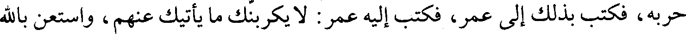
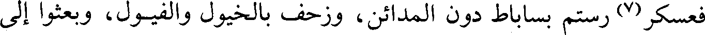
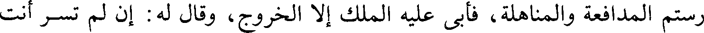

File: 000000.gt.txt (if the image is defective, simply delete all Arabic text and the line will be excluded)

سنة 14
File: 000001.gt.txt (if the image is defective, simply delete all Arabic text and the line will be excluded)

162
File: 000002.gt.txt (if the image is defective, simply delete all Arabic text and the line will be excluded)

وكتب عمر إلى سعد: إذا جاءك كتابي [هذا](1) فعشر الناس(2) وأمر على
File: 000003.gt.txt (if the image is defective, simply delete all Arabic text and the line will be excluded)

أجنادهم، وواعد الناس القادسية، واكتب إلي بما يستقر أمر الناس عليه.
File: 000004.gt.txt (if the image is defective, simply delete all Arabic text and the line will be excluded)

فجاءه الكتاب(3) وهو بشراف، ثم كتب إليه: أما بعد، فسر من شراف نحو فارس
File: 000005.gt.txt (if the image is defective, simply delete all Arabic text and the line will be excluded)

بمن معك من المسلمين، وتوكل على الله، واستعن به على أمرك كله؛ واعلم أنك تقدم
File: 000006.gt.txt (if the image is defective, simply delete all Arabic text and the line will be excluded)

على قوم عددهم كثير، وبأسهم شديد، فبادروهم بالضرب ولا يخدعنكم، فإنهم خدعة
File: 000007.gt.txt (if the image is defective, simply delete all Arabic text and the line will be excluded)

منزل حصين دونه قناطر وأنهار ممتنعة، فلتكن مسالحك على أنقابها، فإنهم إذا أحسوك
File: 000008.gt.txt (if the image is defective, simply delete all Arabic text and the line will be excluded)

رموك بجمعهم؛ فإن أنتم صبرتم لعدوكم ونويتم الأمانة، رجوت أن تنصروا عليهم، وإن
File: 000009.gt.txt (if the image is defective, simply delete all Arabic text and the line will be excluded)

60/ب تكن الأخرى انصرفتم من أدنى مدرة من أرضهم حتى / يرد الله لكم الكرة.
File: 000010.gt.txt (if the image is defective, simply delete all Arabic text and the line will be excluded)

بالموعظة والصبر الصبر، فإن المعونة تأتي من الله على قدر النية، والأجر على قدر
File: 000011.gt.txt (if the image is defective, simply delete all Arabic text and the line will be excluded)

الحسبة، وأكثر من قول لا حول ولا قوة إلا بالله، وصف لي منازل المسلمين كأني أنظر
File: 000012.gt.txt (if the image is defective, simply delete all Arabic text and the line will be excluded)

إليها وقد ألقي في روعي أنكم إذا لقيتم العدو هزمتموهم، فإن منحك الله أكتافهم فلا
File: 000013.gt.txt (if the image is defective, simply delete all Arabic text and the line will be excluded)

تنزع عنهم حتى تقتحم عليهم المدائن، فإنها خرابها إن شاء الله.
File: 000014.gt.txt (if the image is defective, simply delete all Arabic text and the line will be excluded)

ومضى سعد حتى نزل القادسية وأصاب المسلمون في طريقهم غنائم من أهل
File: 000015.gt.txt (if the image is defective, simply delete all Arabic text and the line will be excluded)

فارس عارضوها في طريقهم، وجاء الخبر إلى سعد أن الملك قد ولى رستم الأرمني
File: 000016.gt.txt (if the image is defective, simply delete all Arabic text and the line will be excluded)

حربه، فكتب بذلك إلى عمر، فكتب إليه عمر: لا يكربنك ما يأتيك عنهم، واستعن بالله
File: 000017.gt.txt (if the image is defective, simply delete all Arabic text and the line will be excluded)

وتوكل عليه.
File: 000018.gt.txt (if the image is defective, simply delete all Arabic text and the line will be excluded)

فعسكر(7) رستم بساباط دون المدائن، وزحف بالخيول والفيول، وبعثوا إلى
File: 000019.gt.txt (if the image is defective, simply delete all Arabic text and the line will be excluded)

182
File: 000020.gt.txt (if the image is defective, simply delete all Arabic text and the line will be excluded)

إليه، وإن أبى فاقسمها بين المسلمين، فحلف فدفعها[إليه]، وكان فيها أربعون ألف
File: 000021.gt.txt (if the image is defective, simply delete all Arabic text and the line will be excluded)

قال جدي: فمنها أموالنا التي نتوارثها إلى اليوم.
File: 000022.gt.txt (if the image is defective, simply delete all Arabic text and the line will be excluded)

قال علماء السير(1): ولما فرغ عتبة من الأبلة جمع له المرزبان [دست
File: 000023.gt.txt (if the image is defective, simply delete all Arabic text and the line will be excluded)

ميسان](2)، فسار إليه عتبة، وقيل لصاحب الفرات: إن ها هنا قوما يريدونك، فأقبل في
File: 000024.gt.txt (if the image is defective, simply delete all Arabic text and the line will be excluded)

أربعة آلاف أسوار.
File: 000025.gt.txt (if the image is defective, simply delete all Arabic text and the line will be excluded)

قال المدائني(3): كتب قطبة بن قتادة - وهو أول من أغار على السواد من ناحية
File: 000026.gt.txt (if the image is defective, simply delete all Arabic text and the line will be excluded)

69/ب البصرة - إلى عمر أنه لو كان معه عدد ظفر بمن / في ناحيته من العجم، فبعث عمر
File: 000027.gt.txt (if the image is defective, simply delete all Arabic text and the line will be excluded)

عتبة بن غزوان أحد بني مازن بن منصور في ثلاثمائة، وانضاف إليه في طريقه نحو من
File: 000028.gt.txt (if the image is defective, simply delete all Arabic text and the line will be excluded)

مائتي رجل، فنزل أقصى البر حيث سمع نقيق الضفادع، وكان عمر قد تقدم إليه أن ينزل
File: 000029.gt.txt (if the image is defective, simply delete all Arabic text and the line will be excluded)

في أقصى أرض العرب وأدنى أرض العجم، فكتب إلى عمر: إنا نزلنا في أرض فيها
File: 000030.gt.txt (if the image is defective, simply delete all Arabic text and the line will be excluded)

حجارة خشن بيض، فقال عمر: الزموها فإنها أرض بصرة، فسميت بذلك، ثم سار إلى
File: 000031.gt.txt (if the image is defective, simply delete all Arabic text and the line will be excluded)

الأبلة فخرج إليه مرزبانها في خمسمائة أسوار، فهزمهم عتبة، ودخل الأبلة في شعبان
File: 000032.gt.txt (if the image is defective, simply delete all Arabic text and the line will be excluded)

سنة أربع عشرة، وأصاب المسلمون سلاحا ومتاعا وطعاما، وكانوا يأكلون الخبز
File: 000033.gt.txt (if the image is defective, simply delete all Arabic text and the line will be excluded)

وينظرون إلى أبدانهم عل سمنوا؟
File: 000034.gt.txt (if the image is defective, simply delete all Arabic text and the line will be excluded)

وأصابوا براني فيها جوز، فظنوه حجارة، فلما ذاقوه استطابوه، ووجدوا
File: 000035.gt.txt (if the image is defective, simply delete all Arabic text and the line will be excluded)

صحناة، فقالوا: ما كنا نظن أن العجم يدخرون العذرة، وأصاب رجل سراويل، فلم
File: 000036.gt.txt (if the image is defective, simply delete all Arabic text and the line will be excluded)

يحسن لبسها فرمى بها، وقال: أخزاك الله من ثوب، فما تركك أهلك لخير، فجرى ذلك
File: 000037.gt.txt (if the image is defective, simply delete all Arabic text and the line will be excluded)

مثلا، ثم قيل: من شر ما ألقاك أهلك.
File: 000038.gt.txt (if the image is defective, simply delete all Arabic text and the line will be excluded)

وأصابوا أرزا في قشره، فلم يمكنهم أكله، وظنوه سما، فقالت بنت الحارث بن
File: 000039.gt.txt (if the image is defective, simply delete all Arabic text and the line will be excluded)

كلدة: إن أبي كان يقول إن النار إذا أصابت السم ذهبت غائلته، فطبخوه فتعلق فلم
File: 000040.gt.txt (if the image is defective, simply delete all Arabic text and the line will be excluded)

61/ب ثم / قال: من أشرفكم؟ فسكت القوم(1)، فقال عاصم بن عمرو: أنا، فحملنيه،
File: 000041.gt.txt (if the image is defective, simply delete all Arabic text and the line will be excluded)

فحمله على عنقه، فأتى به سعدا، فقال: ملكنا الله أرضهم تفاؤلا بأخذ التراب.
File: 000042.gt.txt (if the image is defective, simply delete all Arabic text and the line will be excluded)

وأقام سعد بالقادسية شهرين وشيئا حتى ظفر وعج أهل السواد إلى يزدجرد، وقالوا: إن
File: 000043.gt.txt (if the image is defective, simply delete all Arabic text and the line will be excluded)

العرب قد نزلوا القادسية فلم يبقوا على شيء، وأخربوا ما بينهم وبين الفرات، ولم يبق
File: 000044.gt.txt (if the image is defective, simply delete all Arabic text and the line will be excluded)

إلا أن يستنزلونا، فإن أبطأ عنا الغياث أعطيناهم بأيدينا(2).
File: 000045.gt.txt (if the image is defective, simply delete all Arabic text and the line will be excluded)

فبعث إليهم رستم، وجاء الخبر إلى سعد، فكتب بذلك إلى عمر، وكان من رأي
File: 000046.gt.txt (if the image is defective, simply delete all Arabic text and the line will be excluded)

رستم المدافعة والمناهلة، فأبى عليه الملك إلا الخروج، وقال له: إن لم تسر أنت
File: 000047.gt.txt (if the image is defective, simply delete all Arabic text and the line will be excluded)

سرت بنفسي، فخرج حتى نزل بساباط، وجمع أداة الحرب، وبعث على مقدمته
File: 000048.gt.txt (if the image is defective, simply delete all Arabic text and the line will be excluded)

الجالنوس في أربعين ألفا، وخرج في ستين ألفا، واستعمل على ميمنته الهرمزان،
File: 000049.gt.txt (if the image is defective, simply delete all Arabic text and the line will be excluded)

وعلى ميسرته مهران بن بهرام، وعلى ساقته النبدوان في عشرين ألفا ولهم أتباع، فكانوا